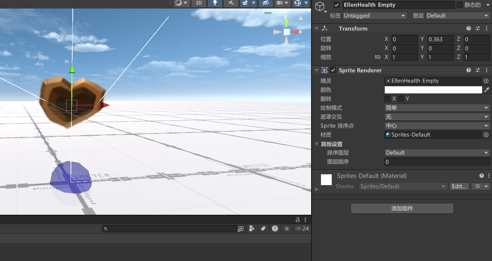
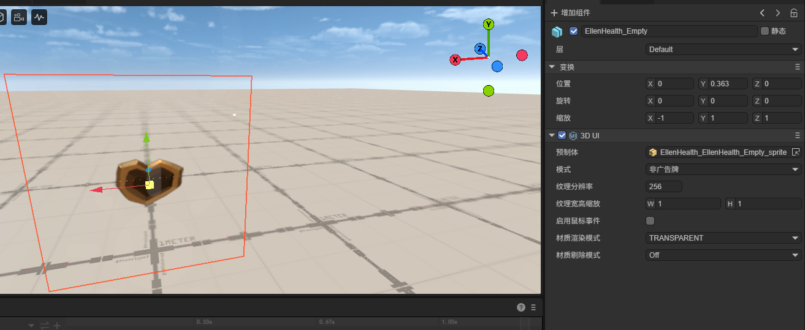
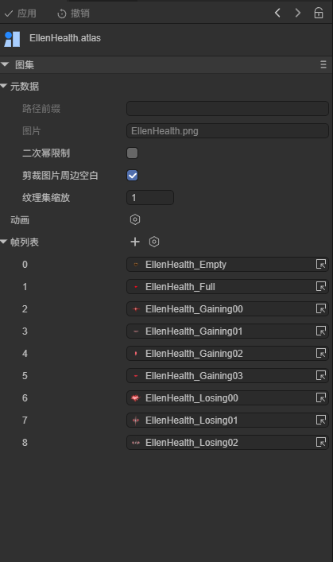
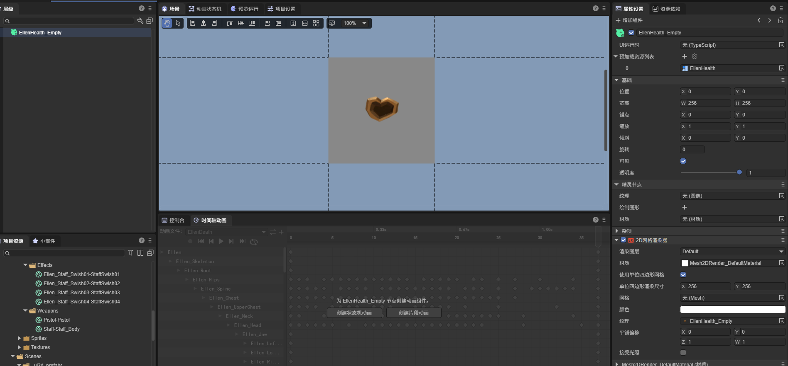

核心原理 · 2D 精灵导出
EllenHealth（Game Kit 的 HUD 精灵，是一张含 9 个子图的 spritesheet）拖进场景做演示。
导出产物：场景里一个 UI3D 组件 + 2D 预制 EllenHealth_EllenHealth_Empty_sprite.lh + 图集 EllenHealth.atlas。
外层结构——SpriteRenderer 导为 UI3D（节点仍是 Sprite3D、保留 3D 变换），UI3D 引用一个 2D 预制。
SpriteRenderer 导出成 UI3D 组件（节点仍是 Sprite3D，保留 3D 变换，localScale.x 取负做左右手坐标补偿）。
UI3D 引用一个 .lh 2D 预制，预制里是带 Mesh2DRender 的精灵：贴图来自导出的图，颜色取自 SpriteRenderer.color，
2D 材质用自动生成的默认材质 Mesh2DRender_DefaultMaterial.lmat（一次生成、复用）。

SpriteRenderer——精灵 EllenHealth Empty、颜色、绘制模式（简单）、材质 Sprites-Default。
..._sprite，UI3D 渲染模式 = 透明(AlphaBlend)——精灵在 3D 场景中渲染。baseRender2D 材质（Mesh2DRender_DefaultMaterial.lmat，一次生成、全局复用）。
SpriteRenderer 上的自定义材质 / shader 不会作为预制体的 2D 渲染材质——画面表现按默认 2D 材质走。
自定义材质的透明 / 叠加属性参与判定 UI3D 的渲染模式（透明 AlphaBlend / 叠加 Additive）。
确定贴图引用方式——精灵占满整图则直引，精灵为大图子区域则导出 .atlas 并按子区域引用。
| 情况 | 导出方式 |
|---|---|
| 精灵占满整张贴图 | 直接用贴图 UUID引用 |
| 精灵是贴图的一部分（spritesheet） | 导出一个 .atlas 文件（记录各子图在母图里的像素 rect）+ 用子贴图 URL 引用，并预加载该图集 |
本例 EllenHealth 是 spritesheet → 走图集模式，导出 EllenHealth.atlas，同母图的多个子图累加到同一个 atlas：

EllenHealth.atlas 的帧列表——Empty / Full / Gaining00–03 / Losing00–02 共 9 个子图，都映射到母图 EllenHealth.png。
UI3D 所引用的 2D 预制的内部结构（带 Mesh2DRender 的精灵）。
UI3D 引用的 .lh 预制就是一个标准的 Laya 2D 节点（带 Mesh2DRender 的精灵）。世界尺寸按精灵自然边界
（像素 / pixelsPerUnit，Simple 绘制模式）或 size 属性换算，另算渲染分辨率。

EllenHealth_EllenHealth_Empty_sprite.lh——一个带 Mesh2DRender 的精灵节点，UI3D 把它当画面内容渲染到 3D 场景里。多个相同精灵复用同一预制与图集；色彩动画接入 Animator2D。
.lh 预制（多个物体引用同一精灵不重复导）；图集模式下同母图的多个子图累加进同一个 .atlas。.mc + Animator2D，附到 2D 预制上（详见 animation 页 ③）。能力边界——空 SpriteRenderer（未挂精灵或精灵无贴图）被跳过，属预期行为。
fileID=0），真正的图在运行时由脚本赋值。
导出器只读取编辑器态的引用，对这类空引用按上面的规则跳过并给出警告。
若发现一批精灵没被导出，可先确认它们的 Sprite 是否在编辑器里就为空、靠脚本运行时填充。